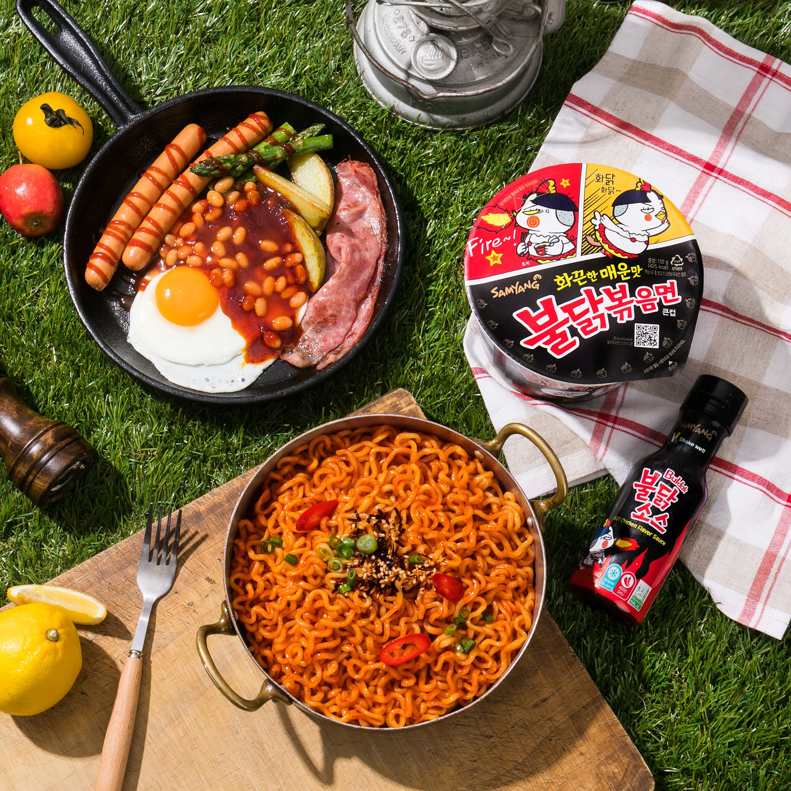
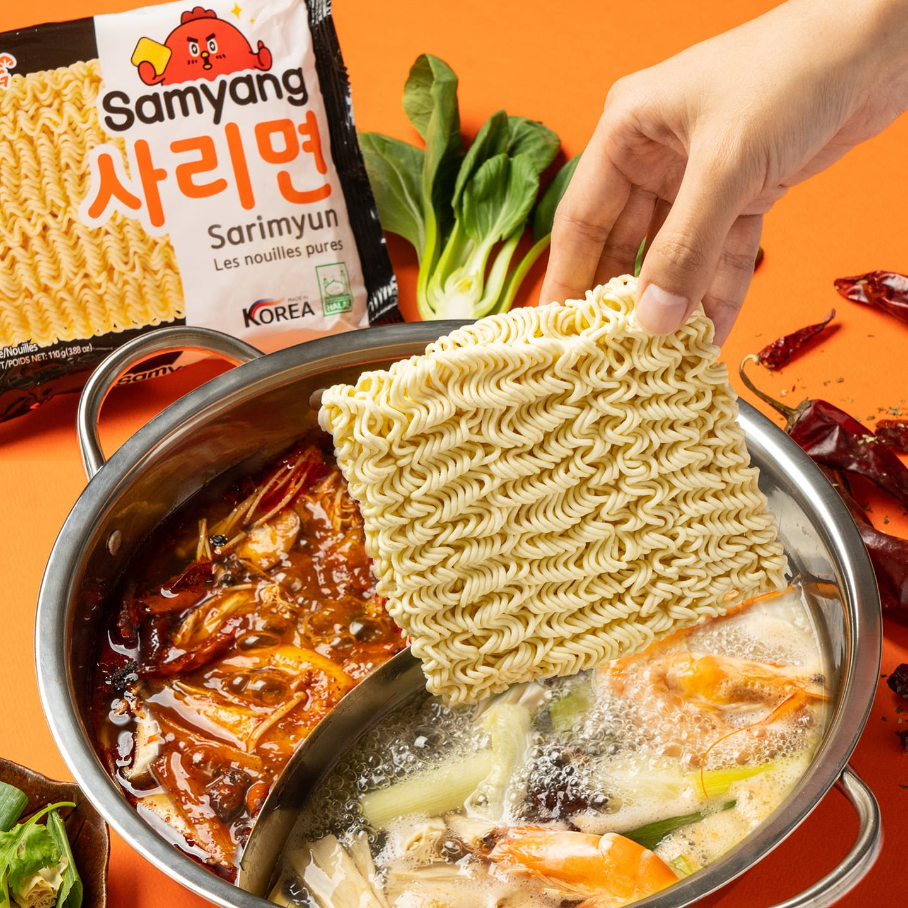

Samyangfood
¡Un solo lugar para disfrutar de una gran variedad de productos!

¡Un solo lugar para disfrutar de una gran variedad de productos!
Re-creación de nuevos negocios/creatividad en el desarrollo de productos
Revitalización, un espíritu de desafío en el trabajo y la cultura organizacional
Excelencia en el sabor/El mejor sabor/Una empresa maravillosa. Samyang Foods Co., Ltd tiene como objetivo principal el mejor sabor y una vida maravillosa.
Una empresa alimentaria integral
Samyang Foods Co., Ltd. utiliza ingredientes naturales de alta calidad para ofrecer alimentos de alta calidad y sabor diferenciado, junto con una excelente comida con sabores tradicionales coreanos.
Tiene empresas subsidiarias relacionadas con los alimentos. Natural Samyang Inc. suministra de manera estable una variedad de productos agropecuarios, incluidos los ingredientes para la base de sopa de ramen, como cebolletas, ajo, sésamo, pimiento rojo y mariscos.
Samyang Farm Inc. proporciona carne fresca y leche de una gran granja a una altitud de 850 m a 1.400 m alrededor de Daegwallyeong en Gangwon-do.
Samyang Foods Co., Ltd ha establecido un sistema de gestión de calidad exhaustivo para que los consumidores puedan confiar en sus productos al estar certificados por oficinas internacionales calificadas (KOLAS, ISO22000, HALAL), así como por una nacional, HACCP..
Produjo el primer ramen de Corea en septiembre de 1963
La década de 1960 fue una época en la que la mayoría de los coreanos tuvieron que apretarse el cinturón, porque los únicos alimentos básicos, el arroz y los cereales mixtos, escaseaban. Los esfuerzos de Samyang Foods Co., Ltd. por superar la escasez de alimentos condujeron al nacimiento del primer ramen de Corea, Samyang Ramen, en 1963. El ramen se ha convertido en el segundo alimento básico de Corea.


Mejora en la dieta
Después de que el país se liberara del hambre gracias al continuo crecimiento económico nacional y con mejores perspectivas de autosuficiencia alimentaria en Corea, Samyang Foods Co., Ltd asumió un papel de liderazgo en la mejora de la dieta del pueblo coreano.
